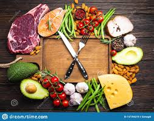

Cooking
I love to cook! I have experimented in the kitchen since I was a kid. The keto diet is my current passion.
Here are some of my favorite recipes:
I love to cook! I have experimented in the kitchen since I was a kid. The keto diet is my current passion.
Here are some of my favorite recipes: